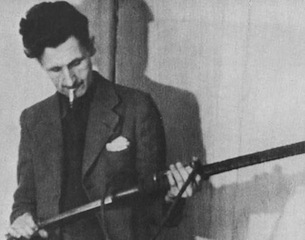

Tuesday, January the 8th, 2013
back to: title, date or indexes
Three eggs.

Regular readers will be aware that whenever I quote from George Orwell's diaries I give the full and unabridged entry for the day in question. Tomorrow we will have to move on to a different diarist, so it is only fair that I take the opportunity to draw your attention to further, ornithologically significant, excitements in Orwell's life which took place on the ninth of January 1939. Not merely
Two eggs
but
Saw large flock of green plover, apparently the same as in England.
Did he think foreign plovers would somehow differ from clean, decent, English plovers?